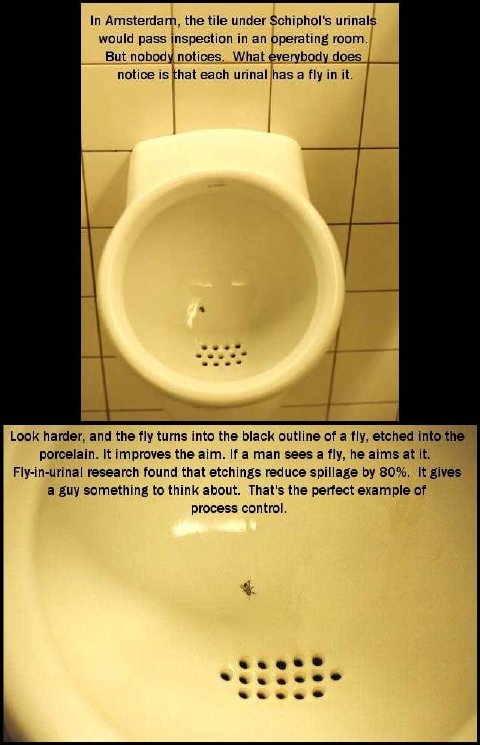

myousica.com was born today
Today we released the output of 9 months of hard work: myousica.com, a social networking site for musicians. Have a look at the promo video and check out the site. Have fun! :)
UPDATE 2009/02/23: The site is now paused.
The best blog post I've ever wrote
javascript, klingon, javascript, javascript, IE, IE, IE, sucks, optimize, optimize,
user experience, web2.0, harnessing collective intelligence, love, hate, sex, ruby,
rails, rails, rails, admin, REST, javascript, javascript, IE IE IE SUCKS, premature
optimization, assets, google API, love, love, hate, hate, air, trips, hide, toggle,
show, ryan, twenty-three times the pain, javascript, IE, ruby, rails, CSS, spacing,
position:absolute, love, love, love, love, too much, too much, too much.
number 42.
Chuck Norris in Ruby
intinig ported Chuck’s roundhouse kick power to ruby! Have a look..
http://github.com/intinig/chuck_norris/tree/master/chuck_norris.rb
It’s a proof-of-concept, of course :).
I've already got Mac OS Snow Leopard 10.6
And this is the proof:

( Of course, if you know about SystemVersion.plist, skip this entry ;) )
What does your .bash_history say?
A friend of mine told me that on techie blogs there is a new meme going on: show off the most used commands, starting from shell history:
history | \
awk '{a[$2]++}END{for(i in a){print a[i] " " i}}' | \
sort -rn| head -15
I’ve got 20 times the default bash history size (10k lines), so it’ll yield interesting results. I also use the history timestamp feature, so I’ve added a little sed to the code in order to strip timestamps out.
Let’s see:
13:19:50 vjt@voyager:~/code*$* history |
sed 's#^[ 0-9\[\/\:]*\]\([^ ]*\).*#\1#' |
awk '{a[$1]++}END{for(i in a){print a[i] " " i}}' |
sort -rn | head -15
928 l
577 ssh
389 ping
381 cd
300 dig
259 telnet
153 sudo
126 ifconfig
125 whois
113 ps
96 svn
91 cat
73 fg
68 vi
61 ..
yeah, I do a LOT of ls, l is actually ls -alFGs (I’m on Darwin). This list exposes my recent habits, because I’m coding less and managing more (no gcc, no irb, lots of dig & whois). svn is still there, of course ;). ssh means that these results should be aggregated with other histories coming from the other boxes I log on to.. but that’s a topic for anoter post ;).
Which are your results?
Post them here! :D
UPDATE 2008-06-03
As my recent habits are more coding than writing docs, I re-ran the history analysis.. and these are the new results:
1796 l 981 svn 705 ssh 693 cd 666 ping 402 vi 356 ifconfig 352 telnet 321 dig 315 sudo 283 fg 240 grep 188 .. 183 cat 157 ps
UPDATE 2009-02-20
5427 l
4379 git
3128 svn
2812 vi
2105 cd
1408 ping
1392 fg
1328 ssh
935 ifconfig
893 grep
890 sudo
733 rake
653 cat
554 ..
535 ruby
UPDATE 2009-05-24
7374 l
5041 git
3265 vi
3131 svn
2753 cd
1881 ssh
1763 ping
1618 fg
1101 sudo
1100 ifconfig
977 grep
867 cat
767 rake
721 telnet
671 ..
UPDATE 2010-06-01
20517 git
7794 l
1906 cd
1631 rg
1518 vi
1108 rake
1041 cat
1010 ruby
790 sudo
754 fg
676 make
670 script/console
626 rm
496 ping
474 ..
UPDATE 2012-07-23
3367 l
2685 ssh
1289 cd
1013 curl
976 git
857 sudo
815 ping
526 telnet
521 ps
497 cat
472 port
422 fg
400 vi
274 rm
259 dig
Remove a lightwindow trigger link after an AJAX call
Well, this is the result of 2 days of head-banging with lightwindow:
Index: public/javascripts/lightwindow.js, line 444
_removeLink : function(removed) {
// remove it from the links array
//
this.links = this.links.reject(function(link) {
if (link == removed.href)
return true;
});
// remove it from the gallery links array
//
if (gallery = this._getGalleryInfo(removed.rel)) {
klass = gallery[0];
name = gallery[1];
if (this.galleries[klass] && this.galleries[klass][name]) {
this.galleries[klass][name] =
this.galleries[klass][name].reject(function(link) {
if (link == removed.href)
return true;
});
}
}
},
call this function from your .rjs template, something like this:
page << "myLightWindow._removeLink($('element').down('a.lightwindow'));"
More details to follow, when this work will be complete ;).
Urinals in amsterdam
Via reddit

We still can do it
Well, it seems that I’ve got no reason to be paranoid about my age: I still can do inline like I did (everyday) when I was a bit younger :).
On international workers day, 1st of may, sam literally carried my out from home, far from the computer, and we went skating. It’s been an awesome day, we skated a lot, and shot some nice photos.
But the real good ones have been shot when ndstr caught us. He is by far the best photographer you could met, and of course my favourite one (take a look at his site!).
He’s been also a skater, so he knows very very well how and when to shot in order to take out the most from your tricks :). Here are two of them, portraying me and sam while doing our best!

It was fun. Really fun. Thank you sam for taking me out of home :D.
Oh, and don’t forget to visit my deviantart, and look at this one :D
10.5.2 Odissey: a small journey in Mac OS X services and components
Well, I’m really happy with OSX 10.5.2. Even I’m not the one that blamed Apple for the translucent menu bar that everyone dislikes.. well, I like it. I don’t care about the TM menu bar tool, because I haven’t bought (yet) the nifty Time Capsule, I like the spinner in the Airport menu and, most of all, I really like the updates to the BluetoothSCOAudioDriver.kext that drives my bluetooth headset.
Spotlight also feels faster and faster on every upgrade, and I’m a heavy spotlight user, so this makes me really happy. Thanks Apple engineers!
Back to the topic: why odissey? Because as per my battery hints, I managed to make my MacBook2,1 SHUT DOWN while at 74% of the “Writing files” phase of the combo update… resulting in a completely broken system, as every geek could imagine :). Apple updated some libraries, and upon reboot simply nothing worked, and the darwin console was filled with lots of error messages.
Google Maps (part I of "The Googling")
Ever had some concerns about Google Maps and how much that app can see about your house, your car, yout neighbours and … maybe … yourself?!? Well, maybe you are right! Have a look at this video from the vacationeers ...
;D
how to keep your apple notebook battery healthy
3 simple rules:
- DO NOT leave your charger connected when the battery is charged, even when you go to sleep.
- DO let it discharge completely, when using it wait till it reaches 0%, when sleeping it leave it alone, when you’ll wake up and you’ll open it, a resume from suspend to disk will greet you. OSX FTW.
- Monitor it and show off OSX performance counters to your friends (images courtesy of CoconutBattery.app and System Profiler.app)


Python2.4's urllib2 broken by default on Solaris Express 5.11
While happily installing prerequisites to build an app on Solaris 11, i enjoyed having Mercurial already installed in the base syste”.. except for a BIG issue: digest authentication was broken. I tcpdump’ed the traffic exchanged between the mercurial client and the CGI server and I saw that no Authorization header was sent, and obivously the server refused to serve the hg repository.
Before reinstalling python, maybe from source and replacing the default installation or having side by side two different versions, with consequent nuisances and dirt around the system, I tried a very very small patch to urllib2.py that… amusingly enough, fixed my problem: